Исследование рынка и ассортимента
Разбираю, что продают конкуренты, через какие каналы и по какой логике. Свожу разрозненную картину по десяткам клубов в одну таблицу, из которой уже видно продуктовое решение.
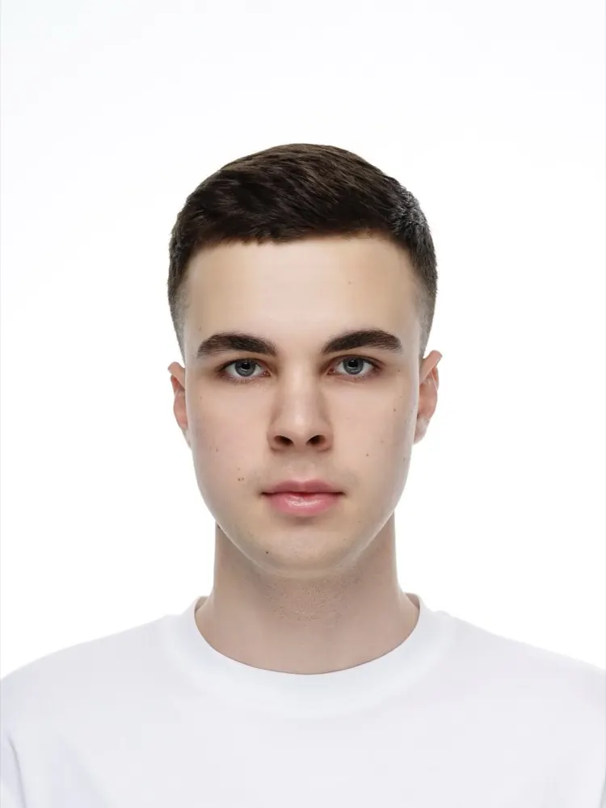
В активном поиске постоянного места работы
Менеджер спортивных проектов: цифровизация, атрибутика и работа спортивных площадок
Веду спортивные проекты от исследования рынка и написания технического задания до координации подрядчиков и работы площадки в день мероприятия.
О себе
Я работаю в спортивной индустрии со стороны организации: отвечаю за процессы на своём участке и довожу задачи до результата. Мне одинаково интересны и продуктовая часть — что и как продавать болельщику, — и операционная: как сделать так, чтобы в день матча всё работало по таймингу.
За последние годы прошёл четыре разные роли: стажировку в департаменте цифровизации ФНЛ, администрирование спортивного пространства WIN BOX, организацию детских и студенческих турниров в Московской федерации футбола и руководство группой стюардов на матчах РПЛ, Кубка России и КХЛ. Это дало мне и штабной опыт — исследование, требования, документооборот, — и полевой, где ошибки видны сразу.
Многозадачный и целеустремлённый: спокойно веду несколько направлений параллельно и не бросаю задачу на середине. Люблю футбол и теннис — езжу на матчи и турниры, чтобы смотреть, как устроен зрительский опыт изнутри. В работе активно использую ИИ: он закрывает рутину с документами, аналитикой и подготовкой материалов.
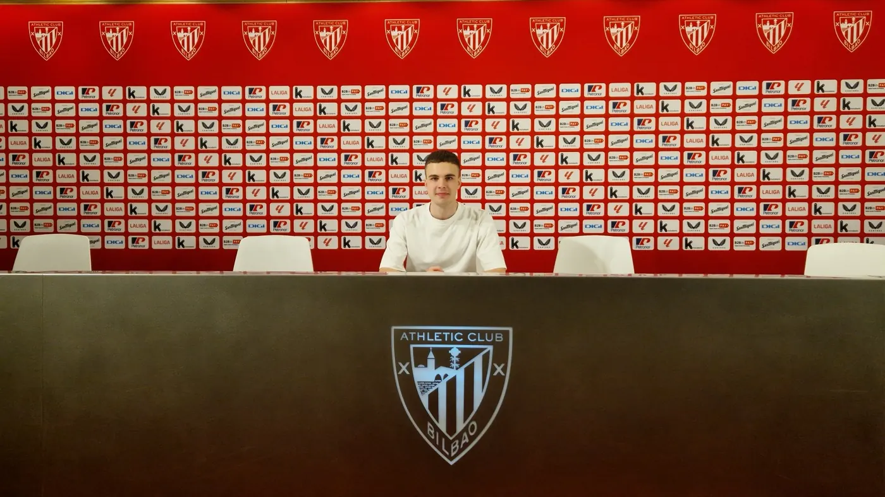
Чем занимаюсь
Разбираю, что продают конкуренты, через какие каналы и по какой логике. Свожу разрозненную картину по десяткам клубов в одну таблицу, из которой уже видно продуктовое решение.
Перевожу бизнес-задачу на язык, по которому подрядчик может оценить сроки и бюджет, а разработка — начать работу без десяти уточняющих созвонов.
Держу проект в одном месте: задачи, статусы, отчётность, переписка с подрядчиками и заказчиком. Готовлю и защищаю результаты перед руководством.
Отвечаю за то, чтобы в день события всё шло по плану: бронирование, инвентарь, гости, тайминг, работа команды на участке и отчётность по итогам.
Опыт
ФНЛ · Стажёр департамента цифровизации
Декабрь 2025 — Май 2026 · 6 месяцев
Задача 73 клуба лиги продавали атрибутику разрозненно: у лиги не было единой картины по ассортименту и каналам продаж, а значит, не на чем было строить общий маркетплейс. Параллельно у лиги шли собственные цифровые продукты — сайт, мобильное приложение, BI-система и «Трансферхаб», — которым нужны были понятные приоритеты в бэклоге и проверка релизов.
Что сделал Провёл исследование ассортимента и каналов продаж всех 73 клубов ФНЛ и на его основе подготовил функциональные требования и техническое задание для подрядчиков. Формировал и приоритизировал бэклог сайта и мобильного приложения лиги по методике RICE — отбирал гипотезы по охвату, влиянию и трудозатратам. Вёл QA цифровых продуктов лиги: писал тест-кейсы, тестировал релизы, вёл отчётность по дефектам. Вёл документооборот и отчётность по проекту в Битрикс24, взаимодействовал с подрядчиками, заказчиками и командой разработки, готовил и представлял результаты.
Инструменты Битрикс24 ИИ-инструменты Официальные источники ФНЛ и клубов CMS-панель Исследование рынка Функциональные требования Техническое задание Приоритизация по RICE QA и тест-кейсы BI-система лиги Презентации
Результат Написаны функциональные требования к будущему «Маркетплейсу ФНЛ» — около 80 страниц документации. Требования и ТЗ переданы подрядчикам и команде разработки, начало разработки запланировано на следующий сезон. Бэклог сайта и приложения выстроен по приоритетам, релизы цифровых продуктов проходили через проверку. По итогам работы получил рекомендацию исполнительного директора ФНЛ — предоставлю по запросу.
Эй Энд Эй Спортс (Рус) · Администратор спортивного пространства WIN BOX
Июнь 2025 — Январь 2026 · 8 месяцев
Задача Площадка одновременно работала на поток клиентов, партнёров и событий: брони, инвентарь, показы для потенциальных заказчиков, VIP-гости, подрядные команды и отчётность — всё это нужно было держать под контролем в одни и те же часы.
Что сделал Проводил презентации площадки для клиентов и партнёров, консультировал по бронированию и вёл брони через админ-панель, интегрированную с сайтом: клиентские записи, статусы, загрузка зон. Выдавал спортивное оборудование и инвентарь, отвечал за его сохранность и оборот. Координировал мероприятия — трансляции Формулы-1, автограф-сессии, шоу-программы — и работу нескольких подрядных команд одновременно, сопровождал VIP-гостей. Собирал и обрабатывал статистику посещаемости и загрузки зон, готовил по ней отчётность для руководства и компании-партнёра площадки.
Инструменты Админ-панель бронирования Отчётность Координация мероприятий Работа с подрядчиками Сопровождение VIP-гостей Учёт инвентаря Презентации
Результат Провёл более 200 мероприятий на площадке. Посещаемость стабильно росла всё лето.
Московская федерация футбола · Администратор
Сентябрь 2023 — Январь 2025 · 1 год 5 месяцев
Задача Турниры идут сериями весь сезон: расписание, инвентарь, десятки команд-участников. Нужен человек, который держит и соревновательные дни, и связь с участниками между ними.
Что сделал Организовывал детские и студенческие футбольные турниры: формировал расписание, рассылал информацию участникам, сопровождал соревновательные дни. Вёл учёт спортивного инвентаря — приёмку, выдачу, контроль состояния, планирование замены и дозакупки. Развивал медиаприсутствие студенческого турнира: вёл Telegram-канал, планировал контент и коммуникацию с командами.
Инструменты Организация турниров Расписание соревнований Учёт инвентаря Telegram-канал Контент-план Работа по таймингу
Результат Турниры проходили по расписанию весь сезон — от детских соревнований до студенческой лиги. Telegram-канал студенческого турнира стал рабочим каналом связи с командами: расписание, результаты и организационные объявления шли через него.
Ивент-Сэйфети · Старший стюард
Февраль 2022 — Июнь 2023 · 1 год 5 месяцев
Задача На матчах с большим потоком зрителей и жёстким таймингом нужен не набор людей на позициях, а управляемый участок, за который кто-то отвечает головой.
Что сделал Руководил группой стюардов на закреплённом участке спортивного объекта: ставил задачи, контролировал выполнение, отвечал за результат участка. Координировал процессы обеспечения безопасности и организации зрительского опыта на матчах РПЛ, Кубка России и КХЛ. Работал в условиях большого потока людей и строгого тайминга мероприятий.
Инструменты Руководство группой Радиосвязь Схемы объекта Регламенты безопасности Работа по таймингу
Результат Отвечал за закреплённый участок с группой около 15 стюардов на матчах РПЛ, Кубка России и КХЛ. Работа шла по схемам объекта и на радиосвязи с остальными участками.
Материалы
Официальный документ с печатью и подписью. Высылаю лично: оставьте контакты, и я пришлю его вам.
Стек и инструменты
Мои цели
Менеджер спортивных проектов / менеджер по спортивной атрибутике
Москва — офис, гибрид или удалённо. Готов к командировкам
Спортивные клубы, лиги и федерации, букмекерские компании, площадки и бренды атрибутики
Стадионы
Езжу на матчи и турниры не только как болельщик: смотрю, как устроены зрительский опыт, навигация, мерч-зоны и работа персонала. Каждая поездка — материал для работы.
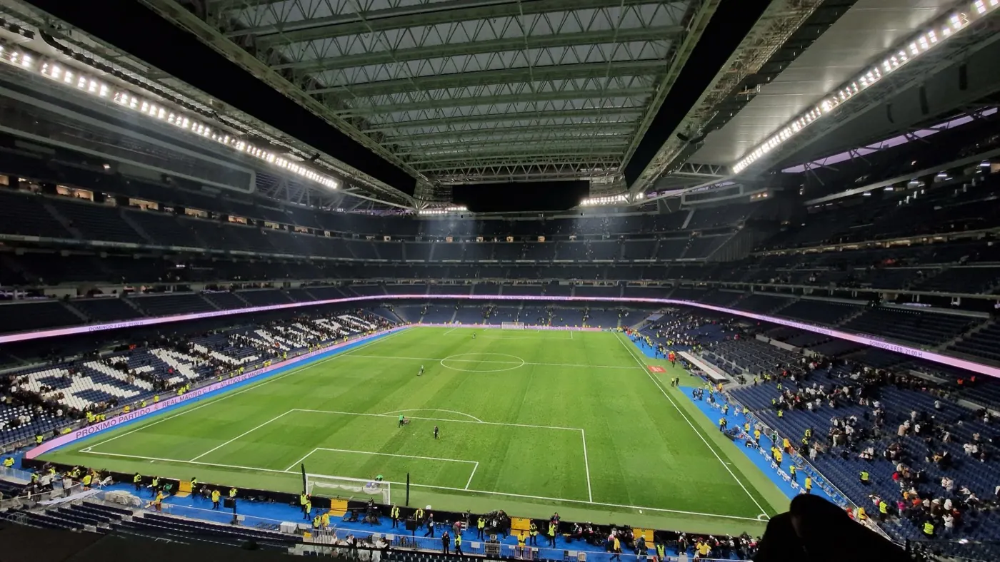
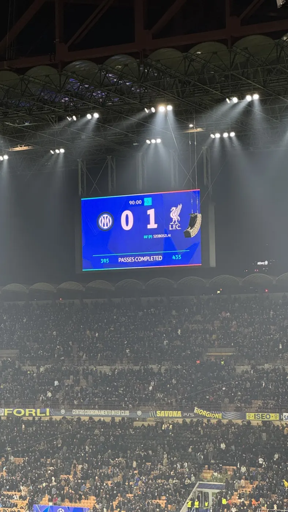
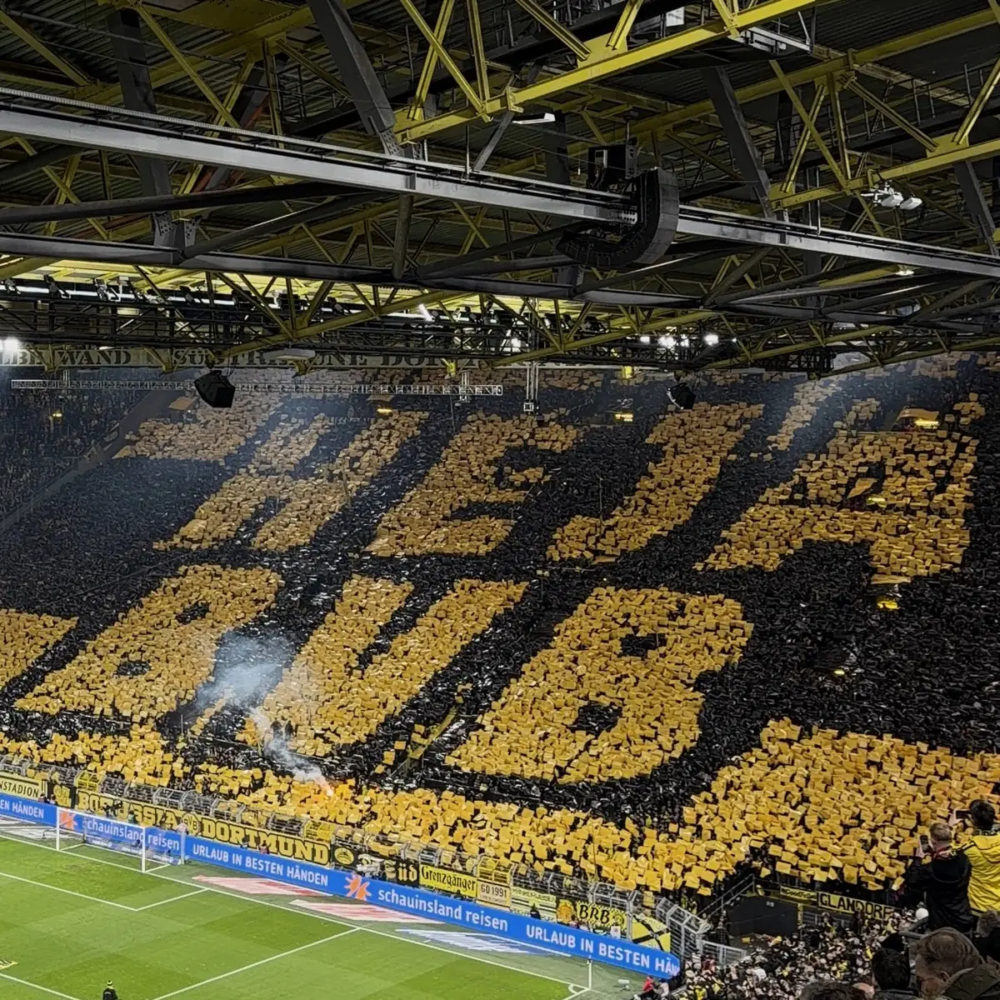
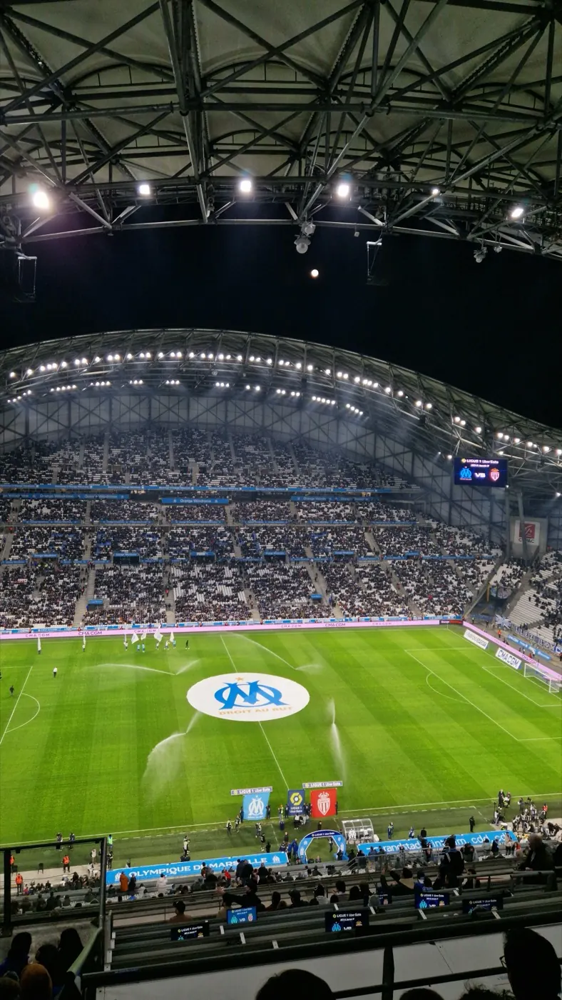
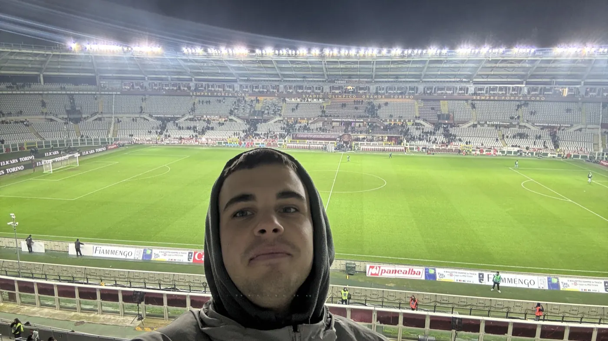
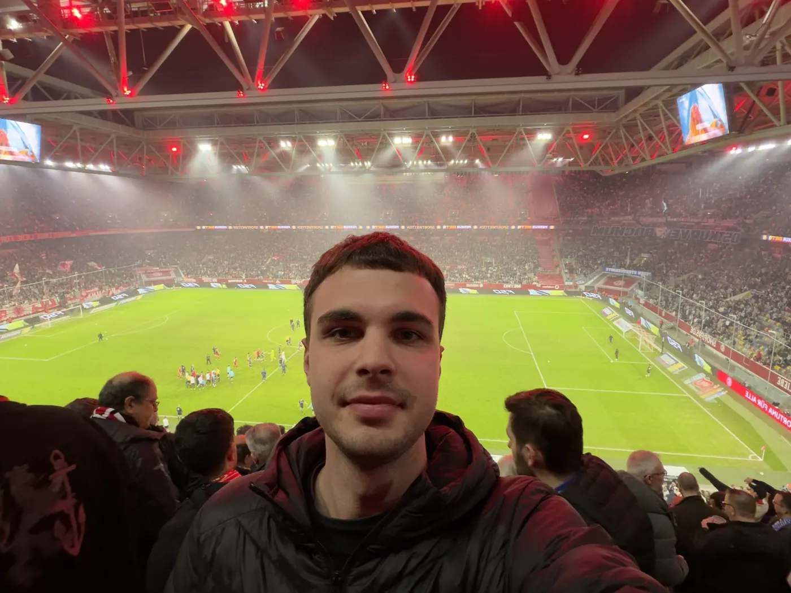
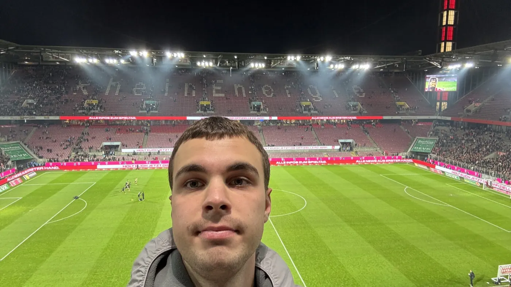
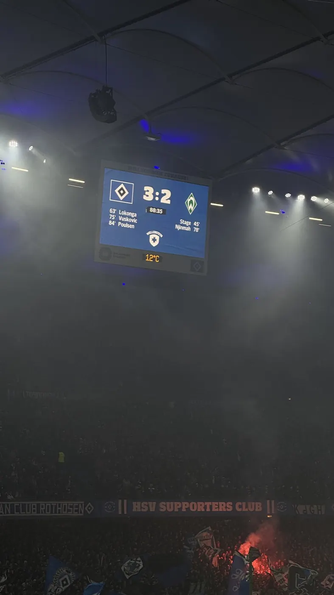
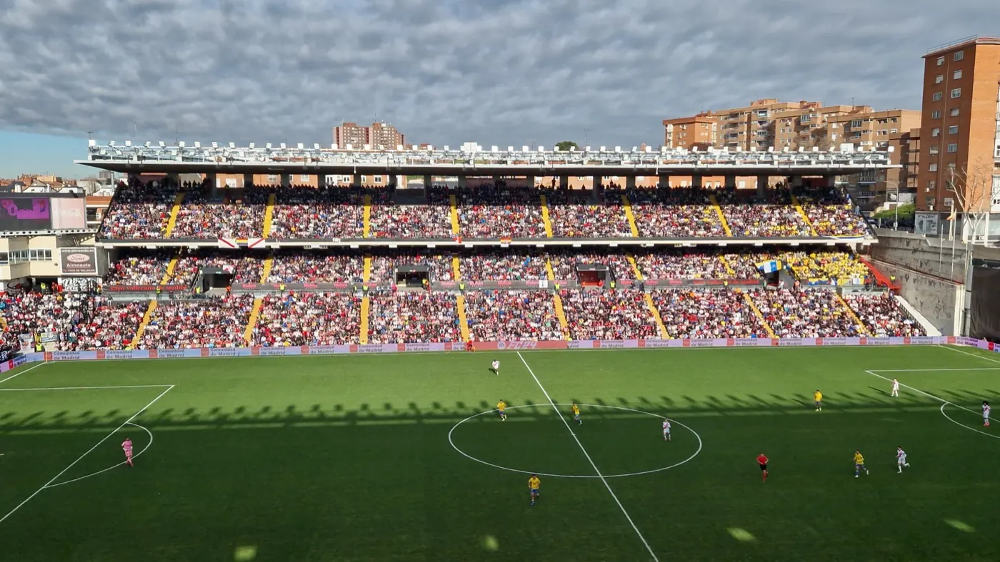
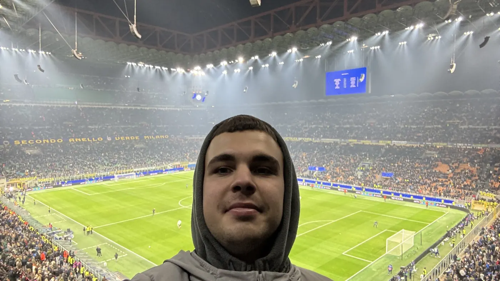
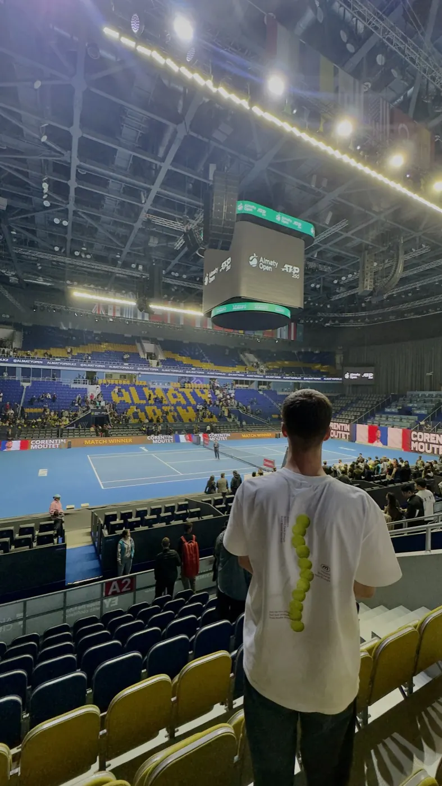
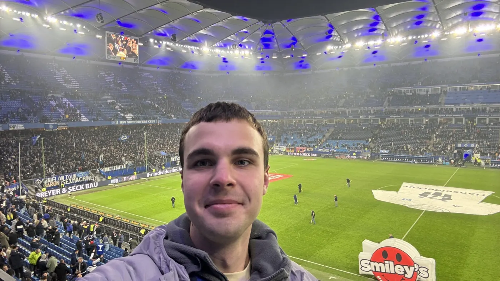
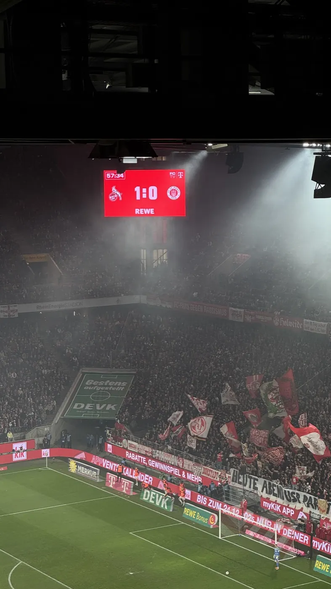
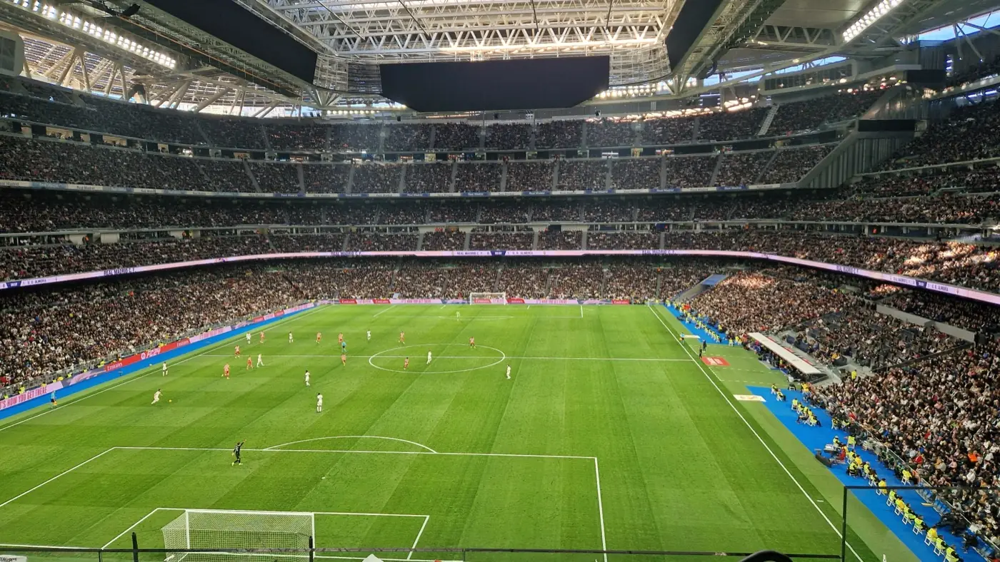
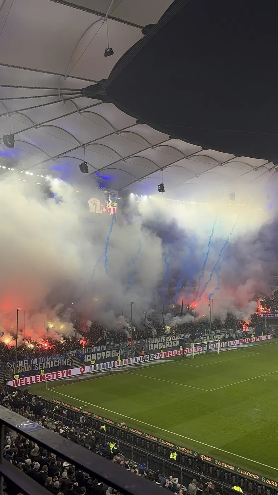
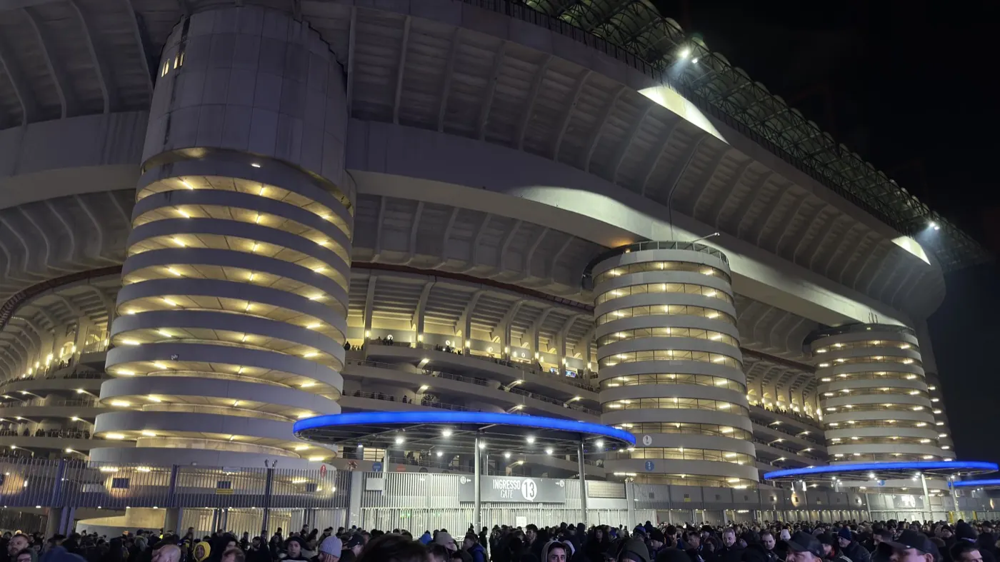
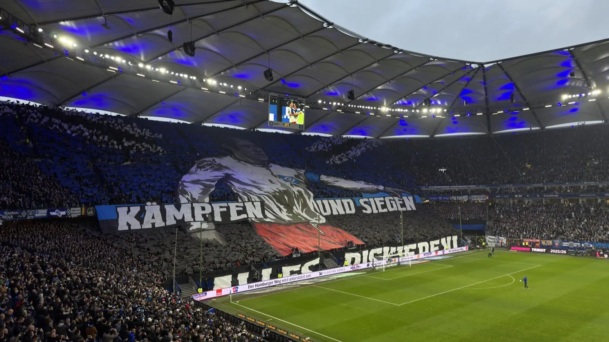
Контакты
Расскажите задачу — отвечу, чем могу быть полезен. Резюме и рекомендацию исполнительного директора ФНЛ высылаю по запросу.